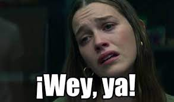
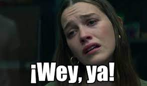

Muy lejos, más allá de las montañas de palabras,
alejados de los países de las vocales y las consonantes,
viven los textos simulados. Viven aislados en casas de
letras, en la costa de la semántica, un gran océano de
lenguas
Chontaduro
Borojo
Limones
peras
Chontaduro
Borojo
Limones
Peras
Coca
Vodka
Acetaminofen
Esta te dara menos vida que las otras pero es legal
.jpg) "
"